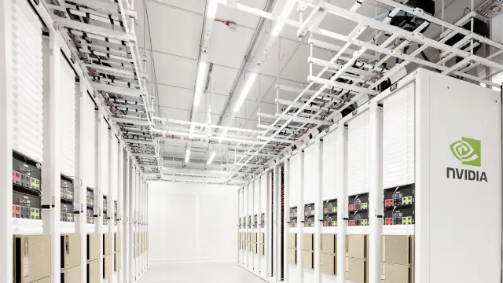
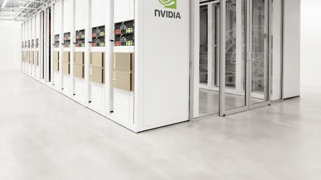

Meta and Google turn back to Nvidia's network: Spectrum-6 for 100K-GPU factories, Falcon Transport on BlueField
Meta and Google are deepening their bets on Nvidia networking — just not its GPUs. At the OCP Global Summit in San Jose on Monday, Nvidia disclosed that Meta is adopting its Spectrum-6 102.4Tb/s Ethernet switches to build AI factories past 100,000 GPUs on its next-generation Vera Rubin platform, and that Google will support Nvidia's Falcon Transport protocol on future ConnectX-10 SuperNICs and BlueField DPUs — even as both companies keep spending to loosen Nvidia's hold on AI compute.
The announcements were part of a broader open-infrastructure push at the OCP Global Summit, held at the San Jose McEnery Convention Center on October 12, 2026. Alongside the networking deals, Nvidia contributed key Vera Rubin rack and compute-tray designs to the Open Compute Project through its open MGX architecture, and joined hyperscalers in publishing new open standards for AI-factory design and grid resilience.

Meta goes Spectrum-6 for 100K-GPU factories
Meta and Nvidia announced that Meta is adopting NVIDIA Spectrum-6 102.4Tb/s Ethernet switches to build larger, higher-performance Vera Rubin AI factories on open networking. Spectrum-6 delivers twice the switching capacity and per-lane bandwidth of Spectrum-4, and provides a lossless Ethernet AI fabric at 200G per lane, with performance isolation that keeps one job's traffic from slowing another's.
At the heart of the collaboration is Spectrum-X Multiplane technology — enabled by Spectrum-6 switches and ConnectX-9 SuperNICs — which distributes GPU traffic in hardware across up to eight independent network planes, letting AI factories scale beyond 100,000 GPUs with fewer switch tiers and lower infrastructure costs. Multiple paths between GPUs improve utilization and resilience: when a component fails, traffic shifts to the remaining planes, keeping GPUs productive.
Meta's Spectrum-6-based switch, N-IceCube, slots into IcePack, Meta's 100T liquid-cooled rack, and runs FBOSS, Meta's open-source network operating system that it contributed to OCP. "We are excited about our close partnership with NVIDIA in making multiplane fabrics operationally scalable and performant," said Omar Baldonado, Meta's senior director of data center and AI networking.
Google backs Falcon Transport on ConnectX-10 and BlueField
Nvidia and Google announced Falcon Transport support on future NVIDIA ConnectX-10 SuperNICs and BlueField DPUs. The irony is hard to miss: both companies have spent the past year trying to loosen Nvidia's grip on AI infrastructure. Meta signed a multibillion-dollar deal to rent Google's TPUs and shipped its own MTIA chip designs, while Google now sells TPUs to outside customers. Microsoft, meanwhile, used the same summit to unveil its own Maia 300 inference chip aimed at cutting reliance on Nvidia and AMD.
The message from San Jose: hyperscalers can build their own accelerators, but Nvidia's networking — the fabric that keeps hundreds of thousands of GPUs moving in lockstep — is getting harder to escape, not easier.

Nvidia and Cisco's USFP: the 400Gb/s-per-lane pluggable
Nvidia and Cisco announced plans for USFP (Ultra-Dense Small Form Factor Pluggable), a new optical transceiver form factor — the industry's first module for 400Gb/s-based networking fabrics. In roughly the same footprint as the widely adopted 200Gb/s-per-lane OSFP, USFP packs 16 full-duplex lanes with plans to scale to 32, delivering four times the bandwidth density of traditional 200Gb/s-per-lane optics and roughly 1.3x greater power efficiency. TE Connectivity and Amphenol are collaborating on cages, connectors and modules.
Open racks, open standards, grid rules
Nvidia joined industry leaders in contributing to the third-generation MGX AI data-center reference design. The updated MGX 1.2 specification adds rack-scale blind-mate liquid cooling, a liquid-cooled 5,000A busbar, native 19-inch equipment support, and racks rated up to 250kW. A new Vera CPU rack specification targets the agentic AI era — tool calling, orchestration and sandboxed execution.
Nvidia also open-sourced four DSX OS components for AI factories (switch configuration, cluster readiness testing, rack management, bare-metal provisioning), and joined AMD, Google and Meta in publishing the Open Data Center Specification v0.7 — a unified blueprint for AI-factory facility design — plus an OCP Grid Resilience Specification with Microsoft that requires large AI infrastructure to stay connected through utility disturbances and restore to near-full load in under two seconds.
Sources: NVIDIA blog — “Amid Ecosystem Adoption, NVIDIA Opens Vera Rubin Architecture to Help Scale AI Factories Worldwide,” Oct 12, 2026; Digital Today — “Google and Meta turn back to Nvidia tie-up on AI networking hardware,” Oct 12, 2026.